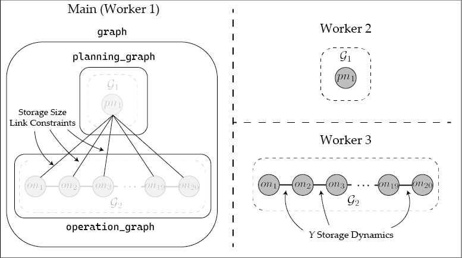

Storage Sizing Example
This tutorial reproduces a sizing and inventory optimization problem used here for a process that converts raw material $X$ into product $Y$. Much of the text and code were first used in the first version of this manuscript. Because product prices fluctuate and production and sales are constrained, the model optimizes the capacity and use of storage to maximize profit over time.
Mathematical Formulation
The mathematical formulation is given by:
\[ \begin{aligned} \min &\; \alpha\cdot s_{size} + \sum^T_{t = 1} \left( \beta_t\cdot x^{buy}_t - \gamma_t\cdot y^{sell}_t \right) \\ &\; y^{stored}_{t+1} - y^{stored}_t = y^{save}_t, t = 1, ..., T-1 \\ &\; y^{save}_t + y^{sell}_t - \zeta x^{buy}_t = 0, t = 1, ..., T \\ &\; 0 \le y^{stored}_t \le s_{size}, t = 1, ..., T \\ &\; 0 \le y^{sell}_t \le \overline{d}^{sell}, t = 1, ..., T \\ &\; \underline{d}^{save} \le y^{save}_t \le \overline{d}^{save}, t = 1, ..., T \\ &\; y^{stored}_1 = \bar{y}^{stored} \end{aligned}\]
where the decision variables are the maximum storage size, $s_{size}$; the amount of raw material purchased, $x^{buy}_t$; the amount of product sent to storage (can be negative for product removal from storage), $y^{save}_t$; the amount of product sold $y^{sell}_t$; and the amount of product in storage, $y^{stored}_t$. $\alpha$ is the cost of building the storage, $\beta_t$ is the cost of buying $X$, $\gamma_t$ is the cost of selling $Y$, and $\zeta$ is a conversion factor from $X$ to $Y$. The parameters $\overline{d}^{sell}$, $\underline{d}^{save}$, and $\overline{d}^{save}$ are upper and lower bounds on their respective variables, while $\overline{y}^{stored}$ is the initial amount in storage. In the formulation, constraints include mass balances on storage and $Y$ and limits on the amount of $Y$ in storage based on $s_{size}$.
Building the Model
Here, we implement the model as a RemoteOptiGraph
This problem is hierarchical in the sense that there is a planning decision ($s_{size}$) that influences the operational decisions ($x^{buy}_t$, $y^{save}_t$, $y^{sell}_t$, and $y^{stored}_t$). In building this problem, we place each hierarchical layer of the problem on a separate RemoteOptiGraph. That is, we place the planning variables on one RemoteOptiGraph and the operational variables on another. To begin, we first add two additional processes and then ensure necessary Julia packages are loaded on each process in the standard way.
using Plasmo, HiGHS, Distributed
addprocs(2) # Uses default multiprocess (single node) parallelism
@everywhere using Plasmo, HiGHS, DistributedWe then set the problem data, and instantiate a new overall RemoteOptiGraph called graph. Two additional subgraphs are instantiated, one on worker 2 for the planning problem and the other on worker 3 for the operations problem. These graphs are then added as subgraphs to graph.
# Set Problem data
T = 20
gamma = fill(5, T); beta = fill(20, T); alpha = 10; zeta = 2
gamma[8:10] .= 20; gamma[16:20] .= 50; d_sell = 50; d_save = 20; d_buy = 15; y_bar = 10
# Instantiate remote graphs
graph = RemoteOptiGraph(worker = 1)
planning_graph = RemoteOptiGraph(worker = 2)
operation_graph = RemoteOptiGraph(worker = 3)
add_subgraph(graph, planning_graph); add_subgraph(graph, operation_graph)The planning problem is then constructed using Plasmo.jl syntax.
# Define planning node data which includes storage size
@optinode(planning_graph, planning_node)
@variable(planning_node, storage_size >= 0)
@objective(planning_node, Min, storage_size * alpha)This is then followed by the construction of the operational problem.
# Define operation nodes, loop through and set variables, constraint, and objective
@optinode(operation_graph, operation_nodes[1:T])
for (j, node) in enumerate(operation_nodes)
@variable(node, 0 <= y_stored)
@variable(node, 0 <= y_sell <= d_sell)
@variable(node, -d_save <= y_save <= d_save)
@variable(node, 0 <= x_buy <= d_buy)
@constraint(node, y_save + y_sell - zeta * x_buy == 0)
@objective(node, Min, x_buy * beta[j] - y_sell * gamma[j])
end
# Set initial storage level
@constraint(operation_nodes[1], operation_nodes[1][:y_stored] == y_bar)
# Set mass balance on storage unit
@linkconstraint(operation_graph, [i = 1:(T - 1)], operation_nodes[i + 1][:y_stored] - operation_nodes[i][:y_stored] == operation_nodes[i + 1][:y_save])Linking constraints are then added between the planning and operations level. These are implicitly InterWorkerEdges since they connect across RemoteOptiGraphs.
# Link planning decision to operations decisions
@linkconstraint(graph, [i = 1:T], operation_nodes[i][:y_stored] <= planning_node[:storage_size])Finally, an optimizer can be set on the operations and planning level graphs
# Set graph objective
set_to_node_objectives(planning_graph); set_to_node_objectives(operation_graph)
set_optimizer(planning_graph, HiGHS.Optimizer)
set_optimizer(operation_graph, HiGHS.Optimizer)The resulting RemoteOptiGraph is visualized below. Here, the object graph is stored on the main worker (where its corresponding OptiGraph appears empty as it only contains subgraphs). The two remote subgraphs planning_graph and operation_graph objects each reference an OptiGraph stored on workers 2 and 3, respectively. The InterWorkerEdges in graph on the main worker contain the storage size linking constraints, while the storage dynamics linking constraints are contained in operation_graph and stored on worker 3.

Solving the RemoteOptiGraph
The RemoteOptiGraphs are not designed to be solved as a monolithic problem. In other words, unlike a Plasmo OptiGraph, calling optimize!(graph) for the above problem will not solve the storage problem above. Instead, the RemoteOptiGraph can be used for developing algorithms. For example, graph can be solved using Benders decomposition, where the storage sizing variables are the master problem and the operation_graph is the subproblem. The accompanying package, PlasmoBenders.jl allows users to directly solve a graph defined in Plasmo using Benders decomposition. For instance, the user can call the following code to apply Benders decomposition to solve graph.
using PlasmoBenders
benders_alg = BendersAlgorithm(
graph, # Overall graph
planning_graph; # "root" graph
# additional keyword arguments if desired
add_slacks = true # add slacks to ensure recourse
)
run_algorithm!(benders_alg)